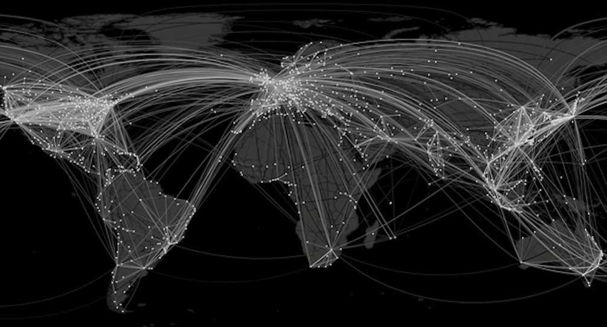
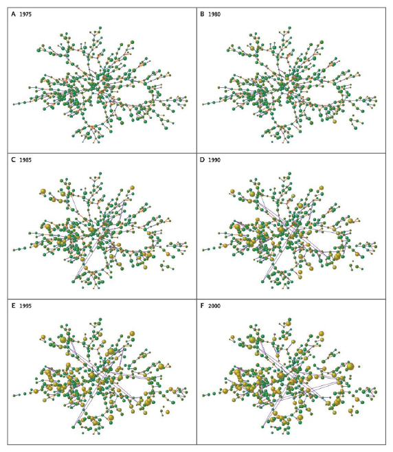
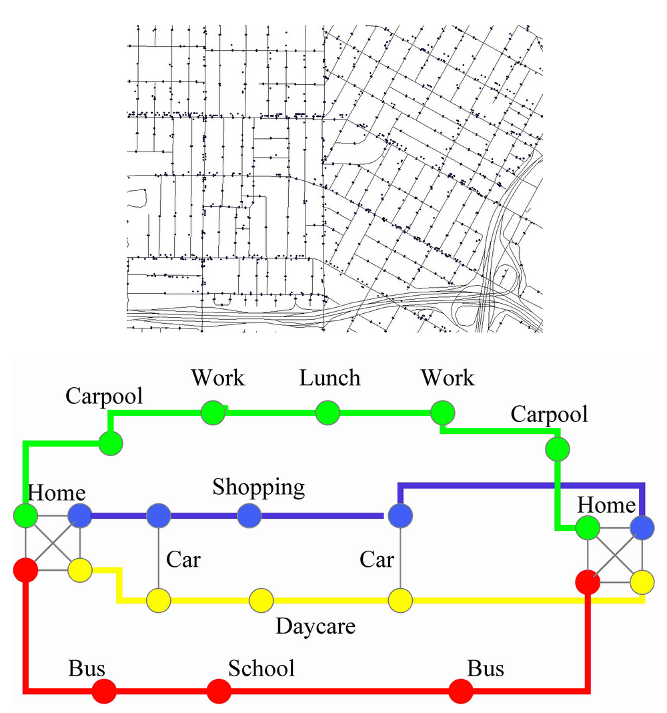
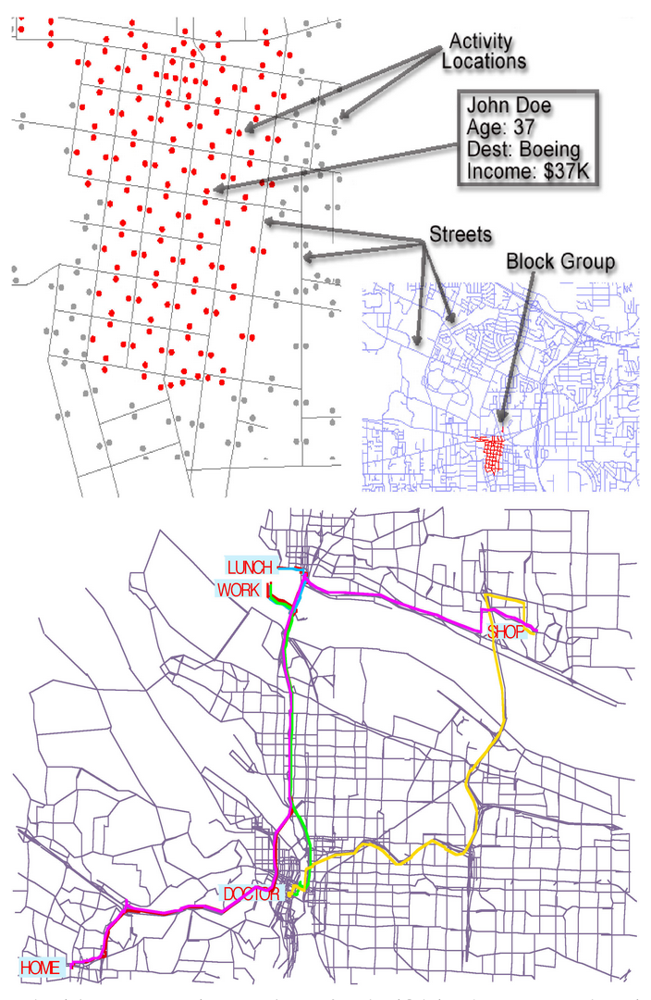
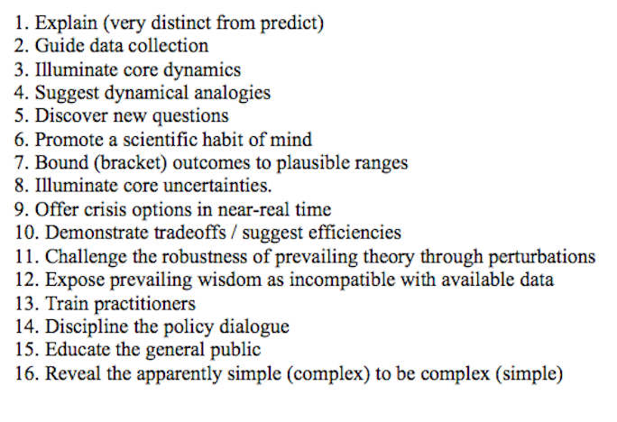

Computational Social Science and Health
Cristina Metgher
PhD candidate in Computational Social Science at GMU
Chief Science Officer at Open Cancer Network
Email: cmetgher@gmu.edu

- we check our e-mail
- make a quick phone call
- walk outside
- get on the bus (swiping our mass transit card)
- purchase a sandwich (with a credit card)
- or visit a doctor (generating digital records about our medical issues)
- we post blog posts and maintain social media profiles (where we talk about how we feel, our tastes, friendships)
Each of this action, when put together, offer a comprehensive pictures of both individuals and groups, with the potential of transforming how we understand lives that was barely conceivable a few years ago (Lazer et al. 2009)
What is Computational Social Science?
Computational Social Science is the interdisciplinary science of complex social systems and their investigation through computational modeling and related techniques.
- aims to understand, model and predict individual behavior
- applies to many scales: cells, individual, families, groups, societies, etc.
Computational modeling was used to shed light on a wide range of complex human and social systems
- Cultural dynamics and environmental change (Hailegiorgis et al., 2010)
- Computational economics (Axtell, 2007) and tax compliance (Bloomquist, 2010)
- Political instability and ecological dynamics in East Africa (Kennedy et al., 2010)
- Conflict (Geller and Alam 2010; Geller et al., 2011; Gulden, 2002; Hendrey et al., 2010; Latek et al., 2010)
- The rise and fall of civilizations both in Northern America (Axtell et al., 2002) and Inner Asia (Cioffi-Revilla et al., 2007)
- Cognitive modeling within agent-based models (Kennedy and Bugajska, 2010)
- Segregation (Crooks, 2010)
Applications to health
- Spread of health behaviors in social networks
- Spatial dynamics of pandemic influenza in a massive artificial society
- The hidden patterns in complex global disease dynamics
- Social media and health
- Agent-based modeling for humanitarian issues
Could obesity spread like a virus through networks of friends and friends of friends?
The Spread of Obesity in a Large Social Network over 32 Years
- Christakis and Fowler looked at individual relations of friendship, kinship, marriages and tracked each person's weight for 3 decades
- 12,067 people were closely followed for 32 years (1971 until 2003)
- What happens over years as some individuals become obese? Do their close relaionships also become obese?
Finding:
- When someone gains weight, close friends tend to gain weight as well (~57%)
Part of the social network from the Framingham Heart Study with information about body-mass index according to year.

The Spread of Obesity in a Large Social Network over 32 Years: dynamic simulation
Why does it matter?
- Network phenomena appear relevant to the bio-behavioral trait of obesity
- Obesity appears to spread across social ties, a finding with potentially implications for clinical and public health interventions
- Weight status can largely be attributed to social norms
Potential mechanisms:
- "Let's go have pizza and muffins together"
- Your friends start gaining weight and your idea of acceptable body size changes
An simulation model of spatial dynamics of pandemic influenza
Spatial dynamics of pandemic influenza in a massive artificial society: EpiSimS
- Constructed to match the demographics of southern California
- Simulates the daily trips and activities of 18.8 mln synthetic individuals
- Individuals move about on a synthetic landscape consisting of places such as a office building or a school building
- Each location is subdivided into sublocations that represent individual households, classroom mixing groups, workgroups --> where person-to-person transmission opportunities occur.

- Each individual is assigned an activity schedule
- Activity patterns are drawn from actual household activity surveys
- Business locations are geo-located by their business address
- The simulation computes the spatially-distributed spread of contagious disease by probabilistic disease transmission based on the contact times between infectious and susceptible persons.

Why does it matter?
- strong correlation between local demographic characteristics and pandemic severity, which gives rise to previously unanticipated spatial pandemic hotspots
- The average household size in a census tract is strongly correlated with the clinical attack rate computed by the simulation
- Public heath agencies responsible for communities with high population per household should expect to be more severely hit by a pandemic
The hidden patterns in complex global disease dynamics
Understanding global disease dynamics has become a major 21st-century challenge
- Complexity of global human mobility, particularly air traffic
- Geographic distance in a globally connected world is no longer a good indicator of how “far” locations are effectively separated from one another
- New effective distance
For example more people travel each day between London and New York than e.g. London and some small town in the UK. So would it not make sense to think of London and New York as being close neighbors and London and a small town in the UK be far apart?
The hidden patterns in complex global disease dynamics
The clip above is a simulation of a hypothetical epidemic, similar in characteristics to the 2009 swine flu pandemic, on the worldwide air transportation network (approx. 4000 nodes and 2500 links) with a hypothetical outbreak in Atlanta. A qualitative characteristic is that the pattern very quickly becomes irregular, no apparent wavefront exists and it is very difficult to predict arrival times at chosen nodes at the network.
Why does it matter?
- Complex spatiotemporal patterns can be reduced to surprisingly simple homogeneous patterns
- Effective distance reliably predicts disease arrival times
- Starting point for more detailed investigations: the spreading speed
- The successful application to real epidemic data suggests that our method is also of practical use (H1N1 pandemic in 2009)
Circaseptan (Weekly) Rhythms in Smoking Cessation
Considerations
Weekly Rhythms in Smoking Cessation
Considerations
- Popular belief has been that the decision to quit smoking is unpredictable or even chaotic
- The authors examined Google cessation query trends in English, French, Mandarin, Portuguese, Russian and Spanish(2008 - 2012)
- Queries including “quit” and “smoking” (eg, “quit smoking help”) were combined into a single trend - this was repeated for “arrêter de fumer,” “parar de fumar,” “бросить курить,” and “dejar de fumar.”
- Monday query volumes were 25% (95%CI) higher than the combined Tuesday through Sunday mean for all languages.
Why does it matter?
- "Forget the New Year's -- Monday is the day to quit!"
- Public health campaigns on smoking cessation could direct their resources — time, staffing, money — earlier in the week, when they might get best results
- The research could revolutionize the way that health officials think of helping the estimated 1 billion smokers worldwide
Agent-based model for humanitarian issues
Agent-based modeling for humanitarian issues: disease and refugee camps
- This work involves a spatially explicit agent based model that explores the spread of cholera in the Dadaab refugee camps
- Authors model agents as dynamic and purposeful individuals engaging in daily activities
- All are susceptible to diseases
- - the spread of cholera grows radically from contaminated water sources and highlight the potential of agent based modeling to explore the spread of cholera in a humanitarian context
Modeling cholera transmission in refugee camps
Why does it matter?
- This modeling effort highlights the potential of
agent based modeling to explore the spread of cholera in a humanitarian context
- Impact on service provision
- The model shows that agents who are exposed to
contaminated water are very susceptible to cholera infection
- The agents are also
some of the causes of the epidemic when they use open field latrines
- Cholera cases were identified in a place where water sources were relatively safe
-
This was due to runoff caused by rain and as agents were travelling throughout the camps to visit their friends and relatives.
Sixteen Reasons Other Than Prediction to Build Models

Recap
- Computational social science methods are useful for studying infectious, as well as chronic diseases
- It is fundamentally interdisciplinary
- Represent complex processes in a simplified form to enhance understanding
- Explore policy options prior to enacting them
- Approach existing health question with the new methodologies
- Understanding how policies might be designed to work synergistically
- Next steps: draw on findings from more disciplines to build more comprehensive models, focusing on interactions between disparate systems that create overall health